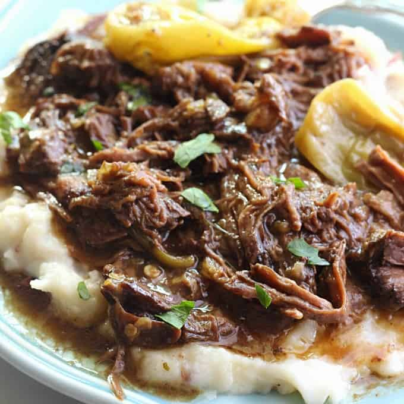

Pot Roast

Description
This is the most delicious Pot Roast you will EVER enjoy. Made with just a few simple ingredients and slow cooked in a crock pot, you are sure to fall in love!
Ingredients
- Chuck Roast
- Au Jus Gravy Mix
- Ranch Gravy Mix
- Jarred Pepperoncini Peppers
- Butter
Steps
- Place the chuck roast in the bottom of your crock pot.
- Sprinkle the ranch and au jus mixes over the top of the roast.
- Add the butter and pepperoncini peppers.
- Place the lid on top and cook over low heat for 8 hours or more.